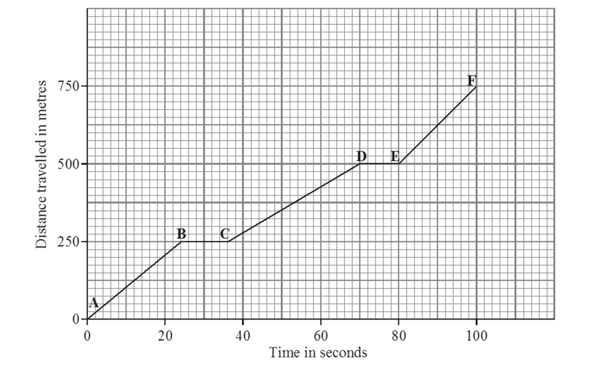

A distance time graph plots distance(s) on the y axis against time(t) on the x axis. Various values can be read and calculated from a distance time graph including speed,time and distance. The graph may be a straight line, a curved line or a mix of both.

How to read and calculate off a distance time graph
Time - The time of a point on the graph is read from its value on the x axis. Remember to use the units from the graph.
Distance - The distance of a point on the graph is read from its value on the x axis. Remember to use the units from the graph.
Speed - The speed of a point on a graph is found by calulating the gradient of the line (change in distance / change in time).
If the line is curved you will have to draw a tangent.